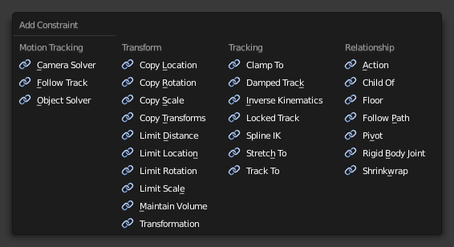

Adding/Removing a Constraint 添加/移除约束¶
关于本页所描述的物体约束也可以应用于骨骼约束。
Tab 标签¶
参考
模式: 物体模式
菜单:
若要添加约束在Constraints（约束）选项卡点击 Add Object Constraint（添加对象约束） 菜单。

移除约束 点击在 标题栏（header） 中的"X" 按钮。
Track 追踪¶
参考
模式: 物体模式
面板：
热键:
Ctrl-T这些工具添加追踪约束 Ctrl-T 到选定物体; 约束的目标物体将是激活物体，不会有约束添加。
- 清除追踪
Alt-T - 删除所有阻尼追踪，追踪到和锁定追踪约束从选定的对象。
- 清除和保持变换 (清除追踪)
Alt-T - 移除选定对象的所有追踪约束，同时保持由它们引起的最终变换。